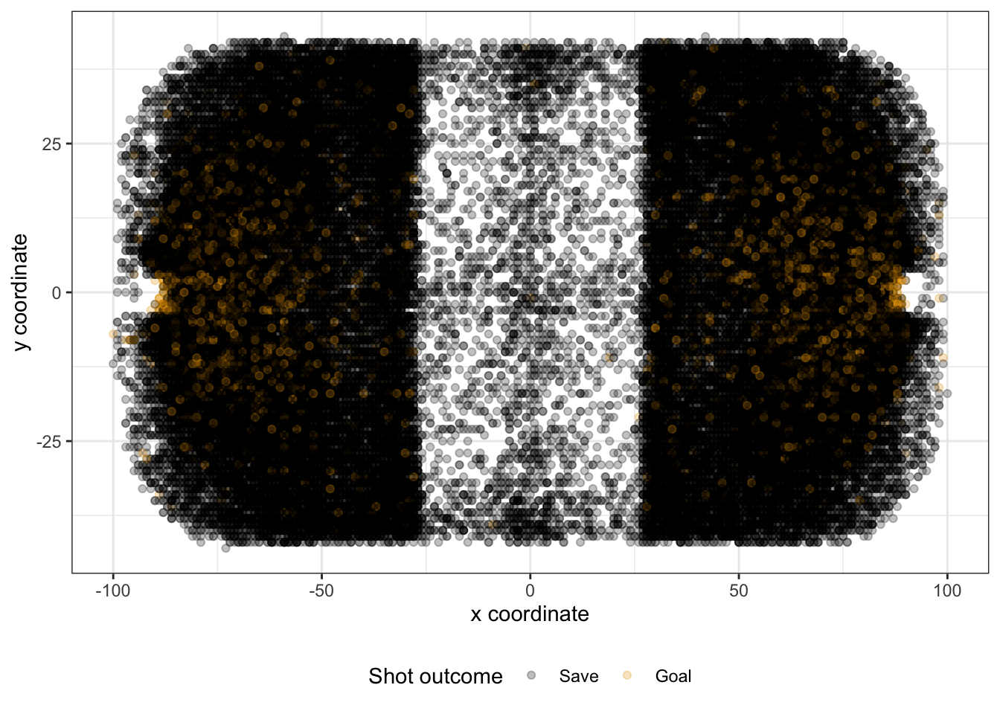
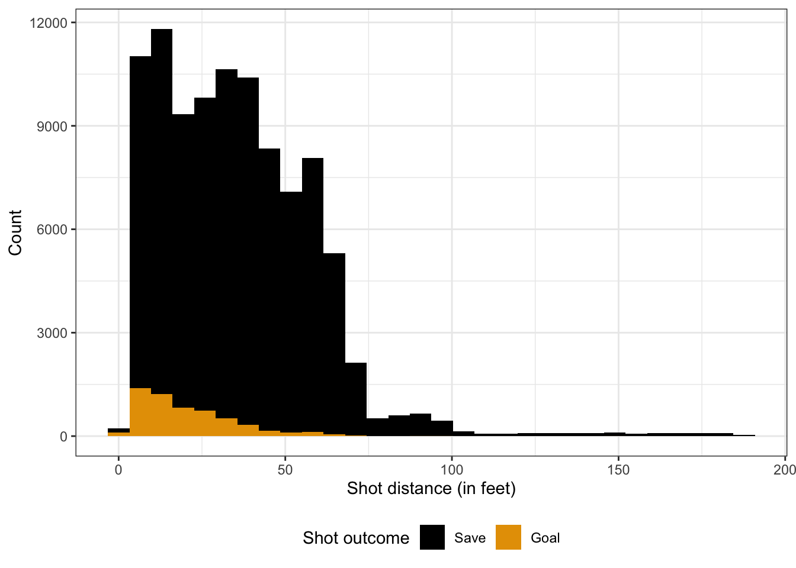
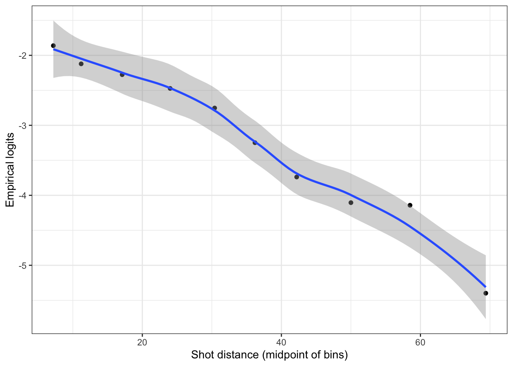

The goal of this demo is to introduce the basic steps of building an expected goals model with logistic regression in R. In this demo, we’ll use a dataset of NHL shot attempts during the 2023-2024 NHL season (accessed via hockeyR) to build an expected goals model for hockey. The code used to create this dataset is available on Canvas. The following code chunk reads in the data (notice the use of the here package for reading in the data) and displays a subset of the data:
library(tidyverse)# This assumes the dataset is saved within the data folder of the directory this# file is loaded in, you can change this depending on where you save the data!model_nhl_shot_data <-read_csv(here::here("data/model_nhl_shot_data.csv"))head(model_nhl_shot_data)
# A tibble: 6 × 11
game_id period shooting_player shooting_team goalie_name goalie_team x_fixed
<dbl> <dbl> <chr> <chr> <chr> <chr> <dbl>
1 2.02e9 1 Bryan Rust Pittsburgh P… Petr Mrazek Chicago Bl… -51
2 2.02e9 1 Kevin Korchins… Chicago Blac… Tristan Ja… Pittsburgh… -55
3 2.02e9 1 Noel Acciari Pittsburgh P… Petr Mrazek Chicago Bl… 75
4 2.02e9 1 Wyatt Kaiser Chicago Blac… Tristan Ja… Pittsburgh… -39
5 2.02e9 1 Alex Vlasic Chicago Blac… Tristan Ja… Pittsburgh… -36
6 2.02e9 1 Marcus Petters… Pittsburgh P… Petr Mrazek Chicago Bl… 32
# ℹ 4 more variables: y_fixed <dbl>, shot_distance <dbl>, shot_angle <dbl>,
# is_goal <dbl>
NOTE: For hockey fans, for simplicity we are only considering even-strength shot attempts with a goalie in net that were either goals or saved by the goalie (i.e., not considering shots blocked by non-goalie defenders or shots that missed wide of the net).
Before diving into any modeling, we should always start with exploratory data analysis (EDA), and visualize the data! The following figure displays the scatterplot of the shot attempts using the provided x (x_fixed) and y (y_fixed) coordinates, colored by the shot outcome (is_goal):
model_nhl_shot_data |># Make a scatterplot of the shot attemptsggplot(aes(x = x_fixed, y = y_fixed, color =as.factor(is_goal))) +# Make sure to modify the alpha!geom_point(alpha = .25) +labs(x ="x coordinate", y ="y coordinate", color ="Shot outcome") +# Use the ggthemes package for colorblind friendly palette ggthemes::scale_color_colorblind(labels =c("Save", "Goal")) +theme_bw() +theme(legend.position ="bottom")

From this figure, we can see a higher density of shots that were goals (indicated by orange color) closer to the two empty spaces along the endpoints of the horizontal line where y = 0 corresponding to the locations of the nets. We also see that the goals tend to be more directly in front of these locations relative to the sides. The figure provides us with some evidence that both the shot distance and angle are likely useful in predicting the probability of a goal.
Simple logistic regression model of distance
We’ll start with a simple logistic regression model to estimate the goal probability of a shot as just a function of the shot distance (in feet). More specifically, we model the log-odds of a goal with a linear model:
Before we fit this model, we’ll continue with some basic EDA by visualizing the relationship between the shot outcome (is_goal) and the distance (shot_distance). The following figure displays a stacked histogram of the shot distance by outcome, indicating that the majority of goals occur at much shorter distances. While the majority of shot attempts do not result in a goal, we can imagine that the probability of goal increases as the shot distance decreases.
model_nhl_shot_data |>ggplot(aes(x = shot_distance, fill =as.factor(is_goal))) +geom_histogram() +labs(x ="Shot distance (in feet)",y ="Count", fill ="Shot outcome") + ggthemes::scale_fill_colorblind(labels =c("Save", "Goal")) +theme_bw() +theme(legend.position ="bottom")
`stat_bin()` using `bins = 30`. Pick better value with `binwidth`.

Next, we’re going to create an empirical logit plot to assess the linearity assumption of the logistic regression model, i.e., to check if the log(odds) is a linear function of distance. To do this, we need to bin the continuous variable of distance and then compute the log(odds) (or equivalently log(goals / saves)) within each bin. The following code chunk uses the cut_number() function to divide the shot_distance variable into bins with approximately equal number of observations. NOTE: Due to the potential for the observed proportion to be 0, in order to avoid log(0) we set a floor of 0.0001 using the pmax() function.
Next, we can make a simple plot with the empirical logit values along the y-axis against the shot distance (via the midpoints of the bins) on the x-axis. We can use geom_smooth() to fit a flexible trend to help us determine if the relationship is linear or not.
shot_distance_summary |>ggplot(aes(x = dist_midpoint, y = emp_logit)) +geom_point() +geom_smooth() +labs(x ="Shot distance (midpoint of bins)",y ="Empirical logits") +theme_bw()
`geom_smooth()` using method = 'loess' and formula = 'y ~ x'

This figure looks reasonable in terms of indicating a linear relationship between the log(odds) of a goal and the shot distance. We see that the log(odds) decreases as the shot distance increases, i.e., the probability of a goal decreases as the shot distance increases.
With the assumption of a linear relationship checked off, we’ll now fit the logistic regression model using the glm() function in R. This is the general use function for fitting any generalized linear model (GLM) in R, where you just need to specify the distribution with the family argument. Although in this case we are technically modeling a variable (is_goal) that follows the Bernoulli distribution, we set family = "binomial" to fit the logistic regression model (since it’s a Binomial distribution with \(n = 1\)).
init_logit <-glm(is_goal ~ shot_distance, data = model_nhl_shot_data,family ="binomial")
We can then view the summary of the model including coefficient estimates, deviance, etc. via the summary() function:
summary(init_logit)
Call:
glm(formula = is_goal ~ shot_distance, family = "binomial", data = model_nhl_shot_data)
Deviance Residuals:
Min 1Q Median 3Q Max
-0.6258 -0.4144 -0.2786 -0.1774 4.1872
Coefficients:
Estimate Std. Error z value Pr(>|z|)
(Intercept) -1.4826561 0.0246069 -60.25 <2e-16 ***
shot_distance -0.0483940 0.0009567 -50.58 <2e-16 ***
---
Signif. codes: 0 '***' 0.001 '**' 0.01 '*' 0.05 '.' 0.1 ' ' 1
(Dispersion parameter for binomial family taken to be 1)
Null deviance: 42736 on 97633 degrees of freedom
Residual deviance: 39264 on 97632 degrees of freedom
AIC: 39268
Number of Fisher Scoring iterations: 6
Using this model, we can create a figure displaying the predicted probability of a goal as a function of shot distance. We view this figure below, with the observed goals and saves marked as points at one and zero respectively. As expected, the probability of a goal is highest for the shortest shots. And we can clearly see that the vast majority of goals are within seventy-five feet, while saved shots span the entire range.
Likelihood-based approaches for model evaluation and comparison
We begin to assess this fit using traditional approaches based on likelihood criterion. Using the deviance, there are two tests we can consider:
Goodness-of-Fit test: \(H_0\): fitted model vs \(H_A\): saturated model
Drop-in-Deviance test: \(H_0\): reduced model vs \(H_A\): larger model (where reduced model is nested within larger model, e.g., reduced model contains subset of larger model predictors)
We’ll start with the goodness-of-fit test, which is testing the null hypothesis that the current model under consideration is a good fit. If we have evidence to suggest the null hypothesis is rejected, then we may be observing a lack-of-fit. We can perform this test easily in R using the pchisq() function to compution the appropriate p-value based on the assumption that under the null hypothesis, the residual deviance \(\sim \chi^2\) distribution with \(n - p\) degrees of freedom:
Based on this result, we have insufficient evidence to suggest a lack-of-fit. If the p-value was below an error rate threshold (e.g., 0.05) then we would reject the null, but we would not know what is driving the lack-of-fit. It may be that we’re missing important covariates and interactions, suffering from outliers, or other concerns with the distribution fit. Just because we fail to reject the null hypothesis in this example does NOT mean our model is optimal! There are other ways we will be able to improve this model, and the use of the \(\chi^2\) distribution is just an approximation (not guaranteed to be correct…).
We can use drop-in-deviance test to compare the fitted model against the null model (intercept-only), using the same function. Under the null, the difference in the reduced model deviance and larger model deviance follows a \(\chi^2\) distribution with degrees of freedom equal to the difference in the degrees of freedom between the two models. In other words, the degrees of freedom for this test is simply the number of parameters in the larger model that are not in the reduced model. The following code chunk shows how to perform this test using the pchisq function:
Based on this p-value, we have evidence in favor of the model with the shot distance variable.
Another way we can perform this test is to initially fit an intercept-only model (the null model) and then use the anova() function with test = "Chisq" specified to achieve the same result:
null_logit <-glm(is_goal ~1, data = model_nhl_shot_data, family ="binomial")anova(null_logit, init_logit, test ="Chisq")
We can use this same test to compare the fit of a model with another variable, such as shot_angle:
dist_angle_logit <-glm(is_goal ~ shot_distance + shot_angle, data = model_nhl_shot_data, family ="binomial")anova(init_logit, dist_angle_logit, test ="Chisq")
Based on this test, we have sufficient evidence to suggest the larger model with both distance and angle is a better fit than the model with only shot distance.
The drop-in-deviance test is only appropriate for evaluating models that are nested within another. It is not an approach we can take for general comparison when considering non-nested models (e.g., two models with distinct, non-overlapping features). However, we can use information criteria measures when comparing non-nested models which consider the model’s likelihood penalized by the number of parameters in some way (i.e., penalty for model complexity). The two common information criterions are:
Akaike Information Criterion (AIC) = \(-2 \times\) log(Lik) \(+ 2p\), i.e., the more variables we use the higher the AIC
Bayesian Information Criterion (BIC) = \(-2 \times\) log(Lik) \(+ p \log(n)\), i.e., log of number of observations places greater penalty on each additional variable
In these forms, for both AIC and BIC, lower values are better.
By default, the AIC is reported in the summary() output for GLMs:
summary(dist_angle_logit)
Call:
glm(formula = is_goal ~ shot_distance + shot_angle, family = "binomial",
data = model_nhl_shot_data)
Deviance Residuals:
Min 1Q Median 3Q Max
-0.8111 -0.3907 -0.2648 -0.1798 4.1795
Coefficients:
Estimate Std. Error z value Pr(>|z|)
(Intercept) -0.8914673 0.0326450 -27.31 <2e-16 ***
shot_distance -0.0513284 0.0009580 -53.58 <2e-16 ***
shot_angle -0.0146870 0.0006025 -24.38 <2e-16 ***
---
Signif. codes: 0 '***' 0.001 '**' 0.01 '*' 0.05 '.' 0.1 ' ' 1
(Dispersion parameter for binomial family taken to be 1)
Null deviance: 42736 on 97633 degrees of freedom
Residual deviance: 38620 on 97631 degrees of freedom
AIC: 38626
Number of Fisher Scoring iterations: 6
You can also use the AIC() and BIC() functions to return the respective values for a given model:
AIC(dist_angle_logit)
[1] 38625.64
The above output matches the previous summary display. And below we can see how the model with both features has a better BIC than the model with only distance:
BIC(init_logit)
[1] 39287
BIC(dist_angle_logit)
[1] 38654.11
Recap
Covered basics of fitting logistic regression in R using glm()
Evaluated and compared models using likelihood-based approaches